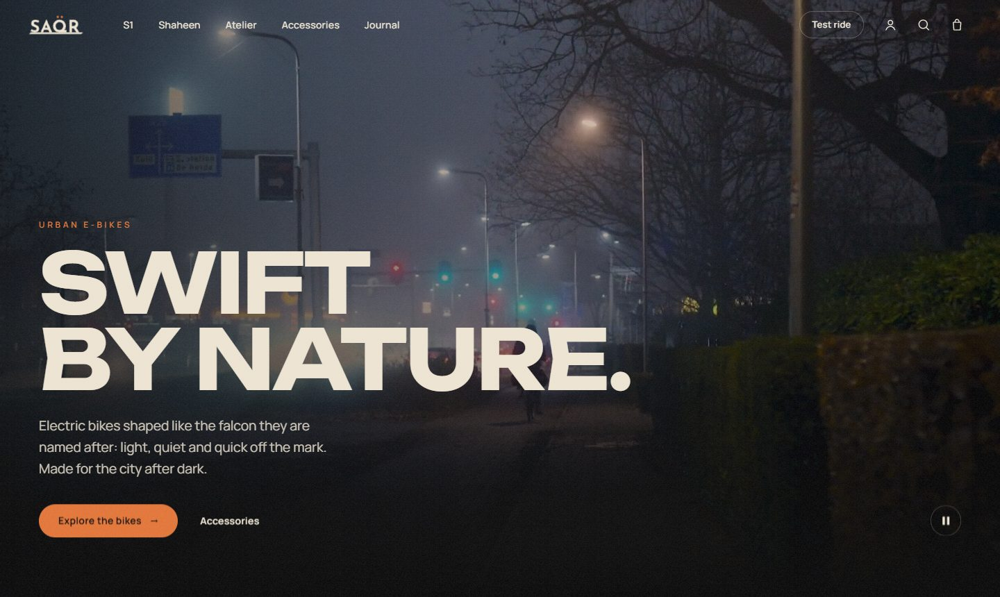
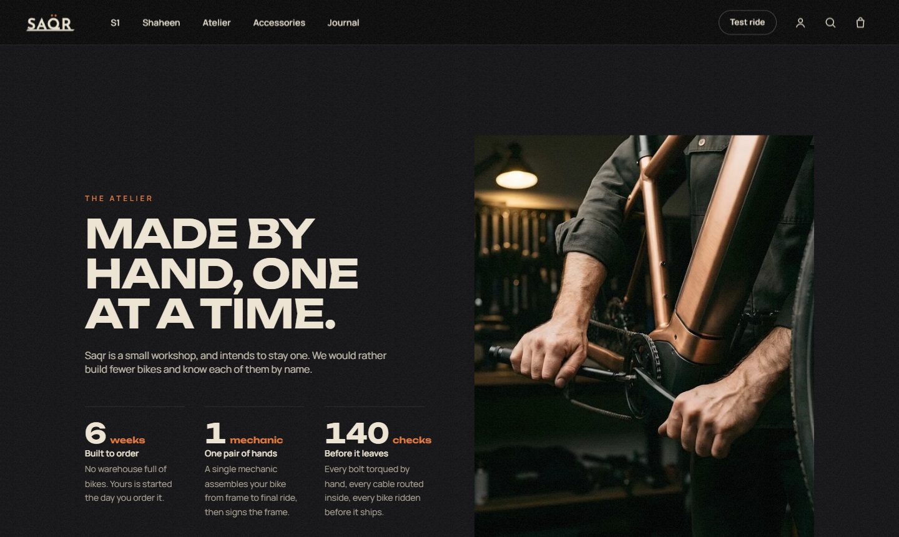
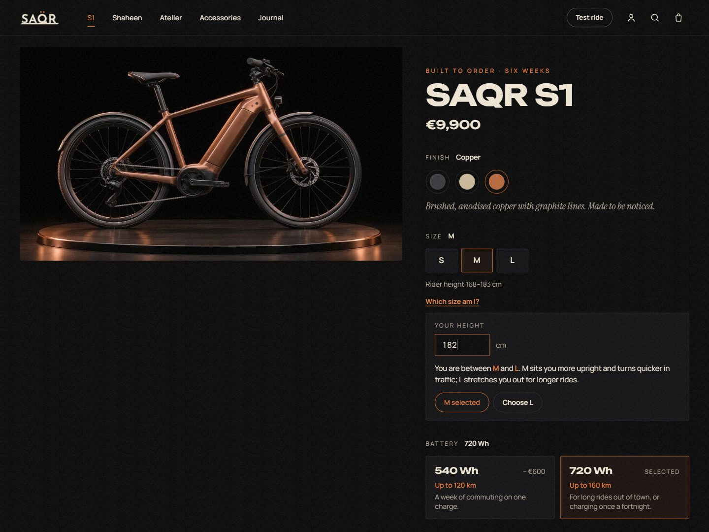
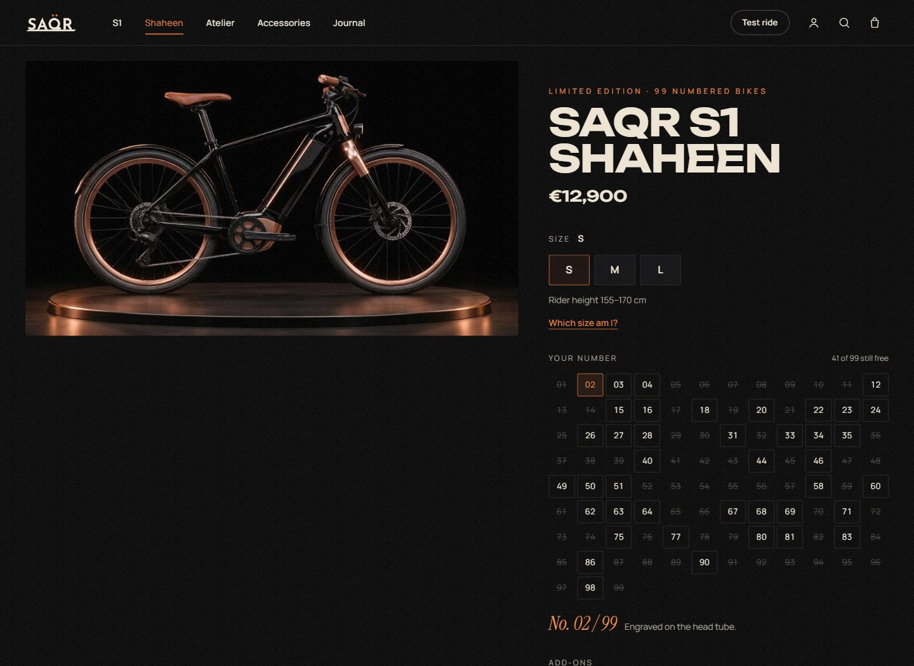
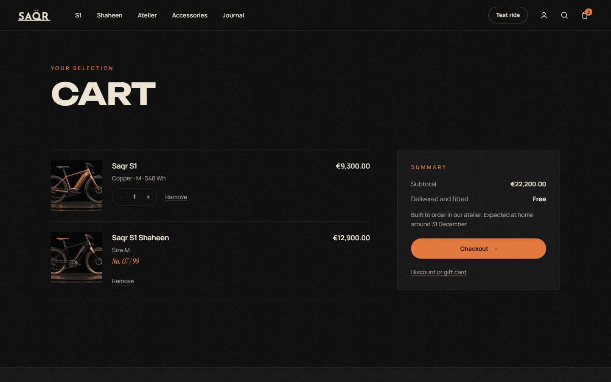
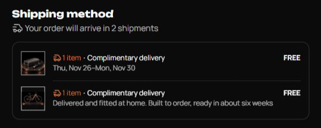
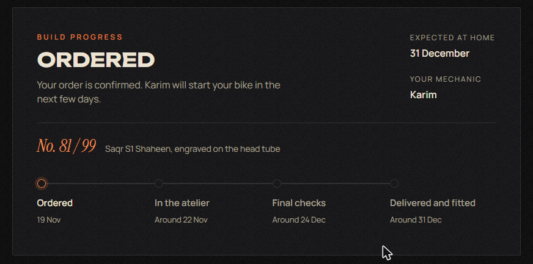
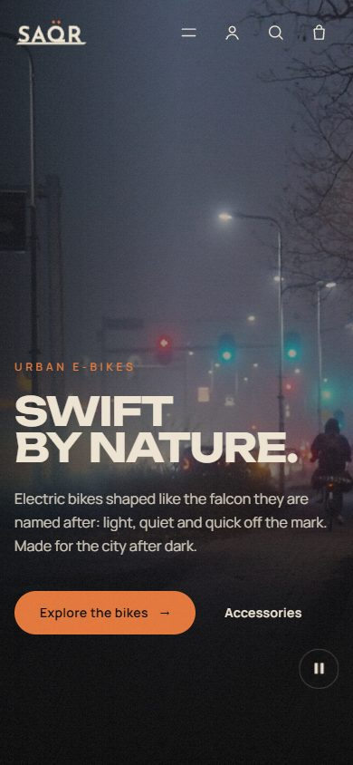
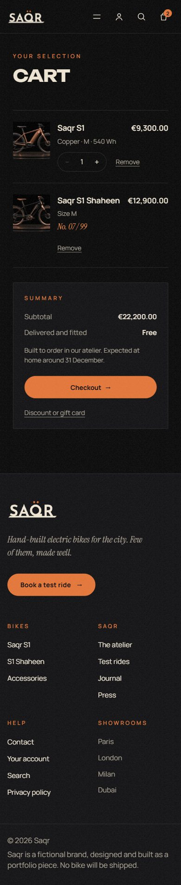
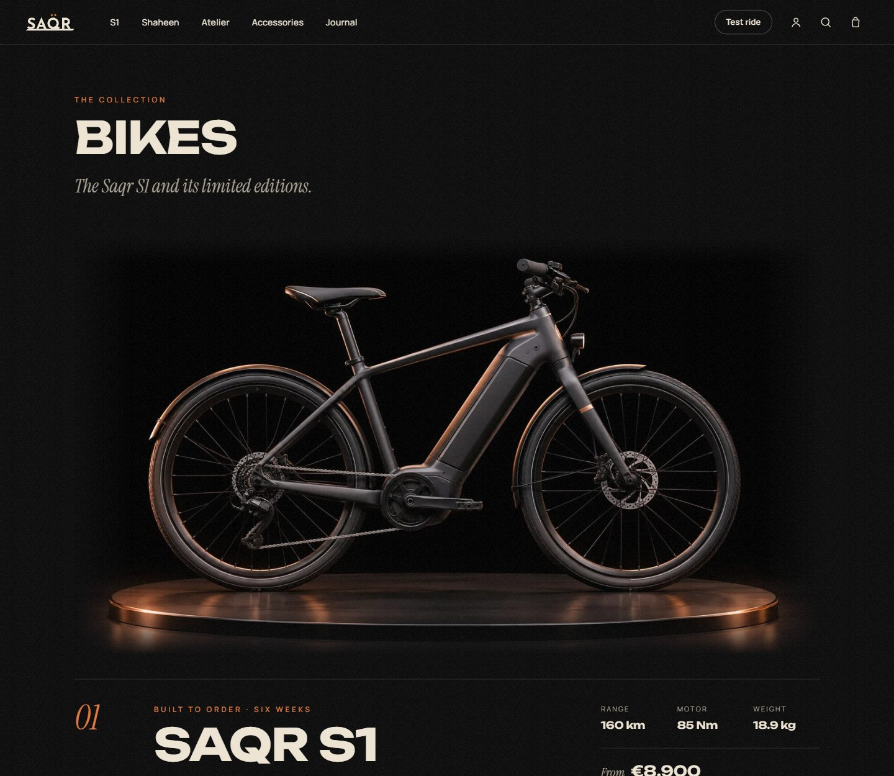

Portfolio project · Shopify Hydrogen
Saqr is an invented brand of hand-built urban e-bikes, named after the Arabic word for falcon. I created the brand and built its storefront as a custom Shopify Hydrogen app: a configurator, a numbered limited edition, a delivery date that follows the six-week build, and a customer account that tracks each bike through the atelier.

Try it
The checkout is real Shopify, running on the store's test gateway: nothing is charged and nothing ships. The whole flow takes about two minutes.
leabreShopify asks for it before checkout because the store is password-protected.1, any name, any future expiry date, any three-digit security code. Card number 2 shows a declined payment.The brief
The store had to read like a small, high-end workshop: one flagship bike in three finishes, a limited series, three accessories. That rules out the patterns of a big catalogue and puts the effort into the moments a buyer of a €9,000 bike actually cares about: choosing their build, knowing when it arrives, and following it once paid.
One rule decided most of the features: add something only if it answers a real question the customer has at that moment. Loyalty points, wishlists and "you may also like" rows were left out on purpose. Scroll-jacking was ruled out from the start, so the page never stops scrolling to play an animation.
"Built by hand to your configuration. Order today, at home around 31 December."
Brand
The logo sets SAQR in squared, Kufic-inspired letters. The two copper diamonds above the Q are the dots of the Arabic letter qaf (ق), the letter that sounds the Q in saqr. On the first page of a visit the logo draws itself: the band traces in, the letters rise, then the two dots drop into place like a falcon's stoop. It plays once per session and not at all when the visitor prefers reduced motion.
The palette is the city after dark. Unbounded carries the headlines, Manrope the text, and Instrument Serif in italics marks the human details: press quotes, finish descriptions, serial numbers. A 4.5% film grain sits over the black.

Configurator
?Finish=Copper&Size=M&Battery=720+Wh) without a page jump.Size ranges live in one table of numbers, used both by the size finder and by the "Rider height 168–183 cm" hint, so the two can never disagree.

Limited edition
The S1 Shaheen is a series of 99. Its page shows the register of every number: taken ones are struck through, free ones can be picked, and the button reads "Reserve No. 02 · €12,900".
The chosen number travels with the cart line as a Shopify line attribute, so it appears in the cart, at checkout, on the order and in the customer's account. A numbered line can't go above a quantity of one: one number, one bike.

Delivery
A bike built to order doesn't ship in three days, so the storefront never pretends it does. The expected date is computed on the server from the six-week build and shown on the product page, in the cart, and again on the order. Delivery is complimentary on everything, which suits a brand at this price.


Getting there meant reading the platform rather than guessing. Rates edited through the Admin API never reached checkout; the admin showed why: this store manages shipping in Markets. The fix was one option name shared by bikes and accessories, so Shopify combines them under "Complimentary delivery" instead of its generic "Shipping".
Checkout and account pages are hosted by Shopify. The branding API is limited to Plus stores, so their colours, fonts and logo were set in the checkout editor, page by page.
Customer account
For bike orders, the account page replaces Shopify's parcel tracking with a build tracker. It is computed on the server from the order date, names the mechanic assigned to the bike, shows the Shaheen number large, and switches to "Delivered and fitted" as soon as the order is fulfilled in Shopify. Orders without a bike keep the standard tracking link.

Performance
The homepage is heavy by design: a full-screen film, a turning bike, large photography. The work went into making the first screen appear at once and letting the rest follow.
| Live homepage, Lighthouse mobile | Before | After |
|---|---|---|
| Performance score | 73 | 80–89 |
| First Contentful Paint (simulated) | 3.4 s | 2.0–2.6 s |
| Largest Contentful Paint (simulated) | 5.2 s | 3.6–4.7 s |
| Largest Contentful Paint (measured) | 1.5 s | 1.2 s |
Three runs each, on the same day. What remains in the simulated figure is the cost of hydrating a rich React homepage; going further would mean restructuring the page.
Phone first
Every page was screenshotted at desktop and phone width before shipping. A review of all nineteen public pages caught what normal use never shows: empty collection cards, a blog index with a single link, 404 pages without a tab title, and one pixel of sideways scroll on phones from an edge gradient.
Display bugs were checked in Firefox too. One fix came from there: rounded buttons briefly lost their ends on hover, because Firefox repainted them during a colour transition. Every button now fades in a separate layer instead.


Workflow
The catalogue, articles and pages are created by scripts against the Admin GraphQL API through Shopify CLI, each operation validated against the schema before it runs.
Left out
Some ideas were built, judged on the real page, and removed. Knowing when to stop is part of the work.
The page stopped scrolling until the bike had turned. It became a looping film in a normal-height section.
Built in code, but not convincing enough next to the photography.
The card photo flew into the product page. It looked clever and added nothing.
The bike plunged onto its motor into the Atelier photo. Removed before it was committed.
Collection
Square product cards cropped the bikes, so the Bikes collection became one editorial chapter per bike: the whole photo faded into the page, a serif number, the line that sells it, three key figures and the price.
